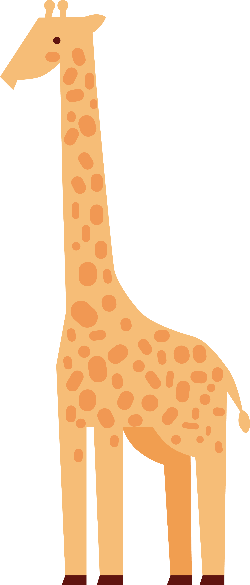
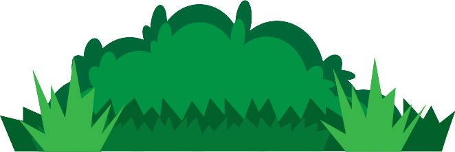
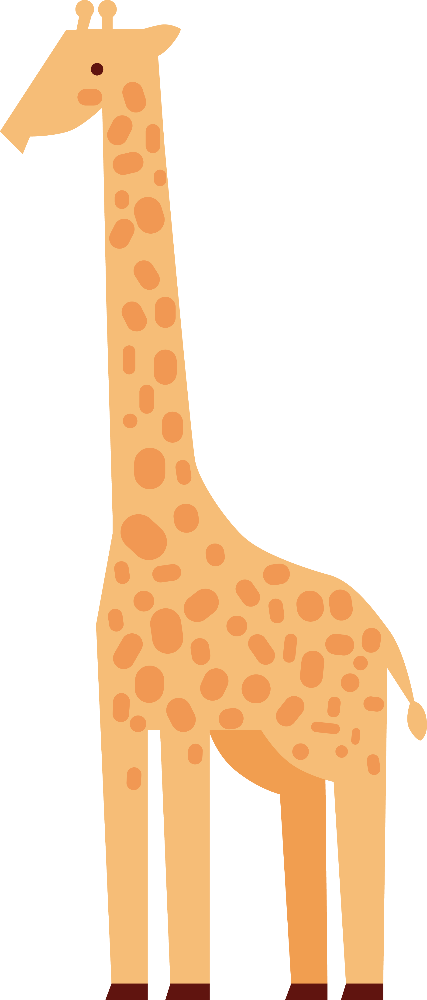
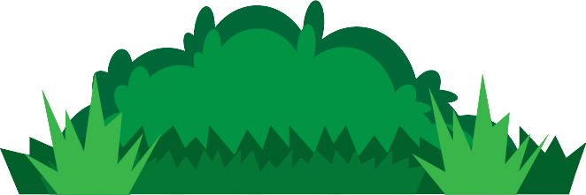
 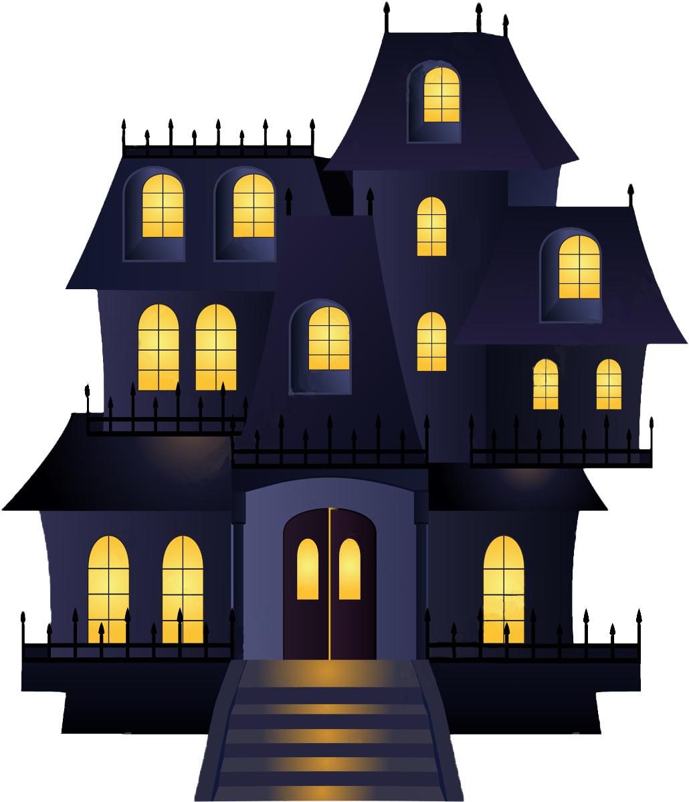
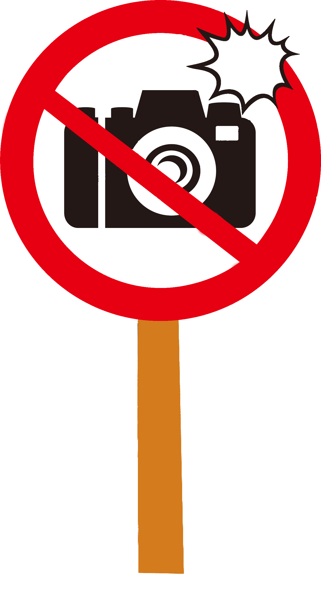
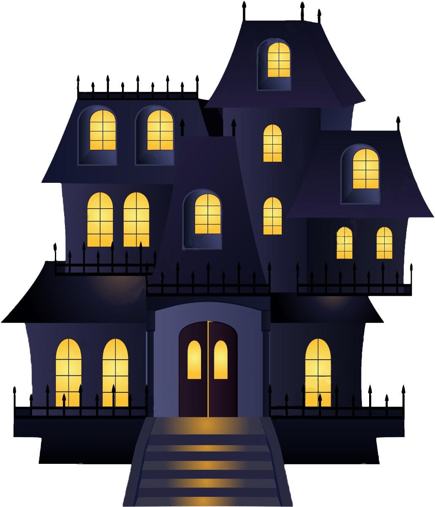
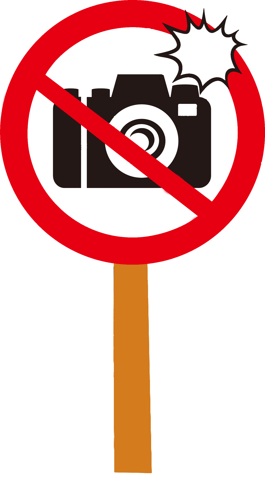
 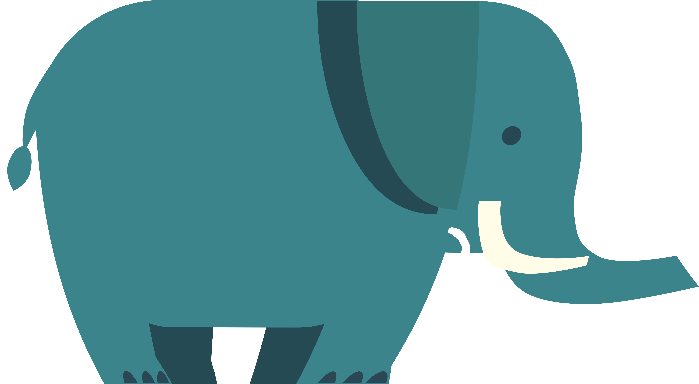
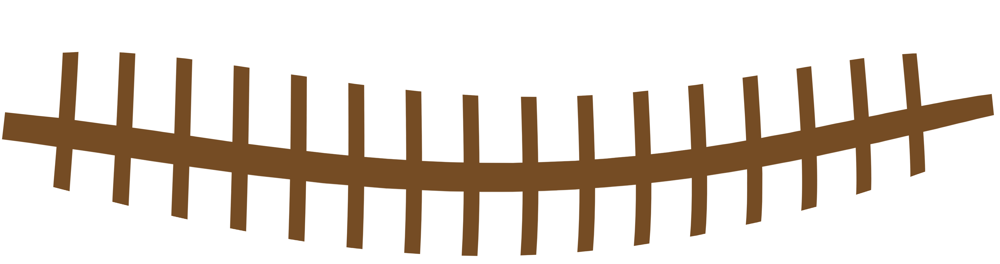
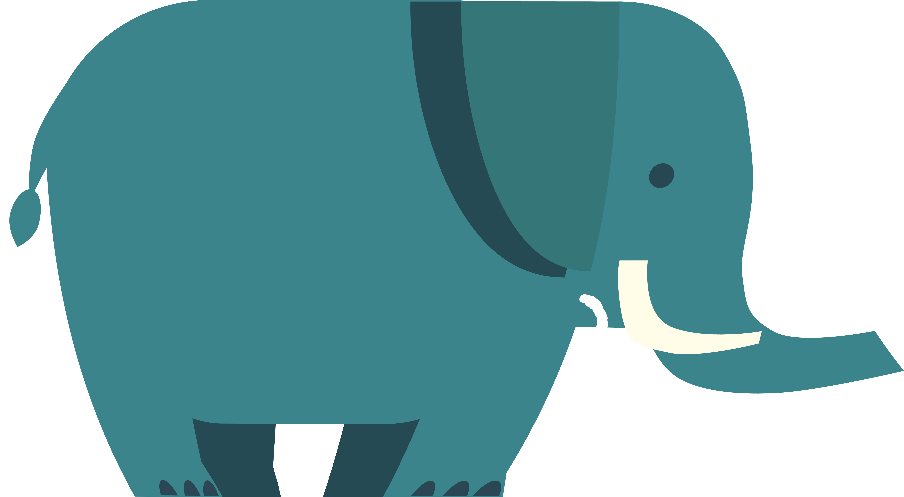
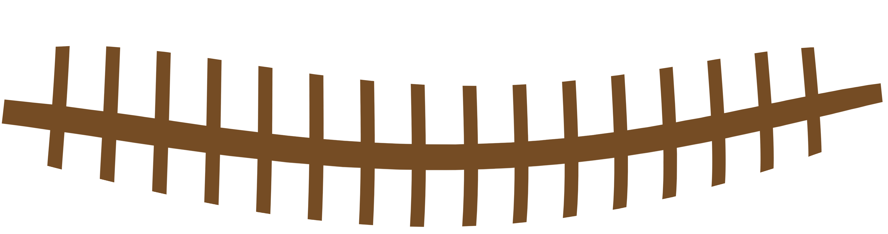
關於長期被關對動物的影響動物說：人類你們逛動物園有想過動物的心情嗎!!!長期被關的動物有時會出現「刻板行為」，也就是重複進行某個動作，例如小白鯨一整天反覆在水池中繞圈子游泳；老虎在籠內不斷重複走動；浣熊在籠子角落反覆轉身；鸚鵡拔掉身上的羽毛⋯⋯造成許多圈養動物刻板行為的原因就是壓力、孤立或無聊。當你們在動物園玩得開心感到有趣時，我們動物其實正受到極大的精神壓力折磨😰
小朋友大叫（小猴子！）另一個小朋友大叫（大獅子！） 猴子說（小朋友們你們的聲音太大了，科學家叔叔阿姨們說暴露在高於85 分貝的噪音環境中對我們有很大的傷害噢！）
開閃光對動物的影響貓頭鷹說：我知道你們出來玩都想要拍照留念，你們開心比ya，但我們不開心。閃光燈或調很亮的手機螢幕讓你們好拍照，卻傷害動物眼睛，還會驚擾、造成恐慌，嚴重一點嚇得拚命逃竄、撞到硬物導致病菌感染慢性死亡或直接死亡。
驚嚇造成動物的情緒不穩定 北極熊說：作為遊客，逛動物園時不要大吵大鬧，不要拍玻璃、用閃光燈，因為這樣會使我們變得煩躁，性情不穩定，可能會不自覺的傷害你們。 事實上，動物園最危險的動物並非獅子老虎或我們熊，而是草食動物。飼養員常要和草食動物零距離接觸，遊客也是。但牠們的蹄和角是能給人致命一擊的，其中犀牛、河馬、大象最為危險，可以殺人於無形。
 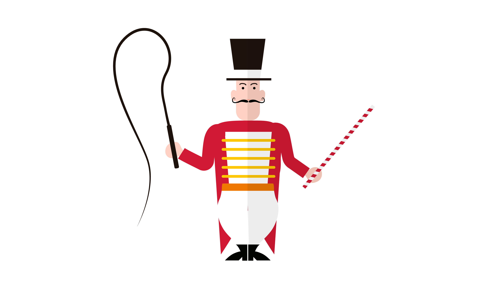
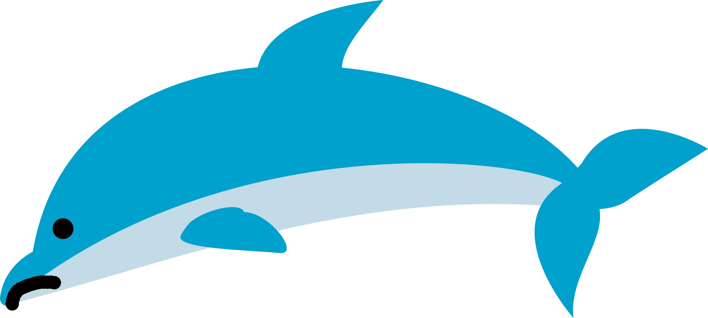
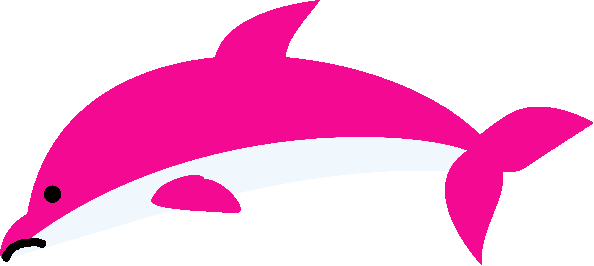
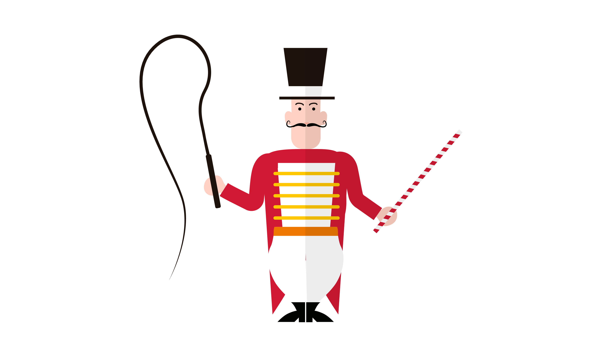
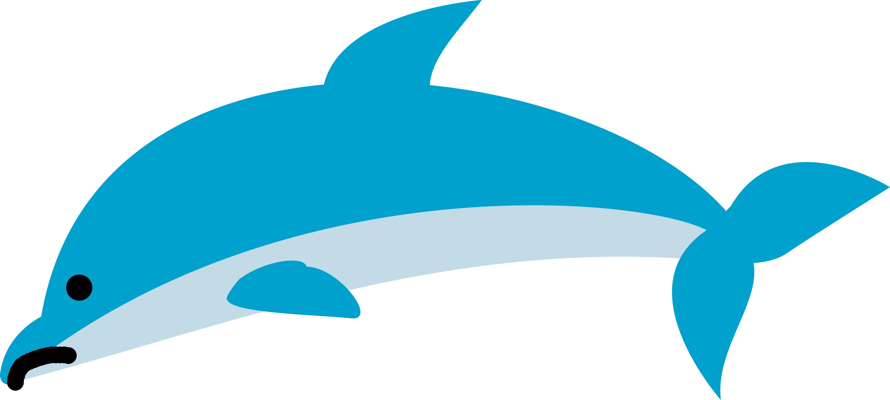
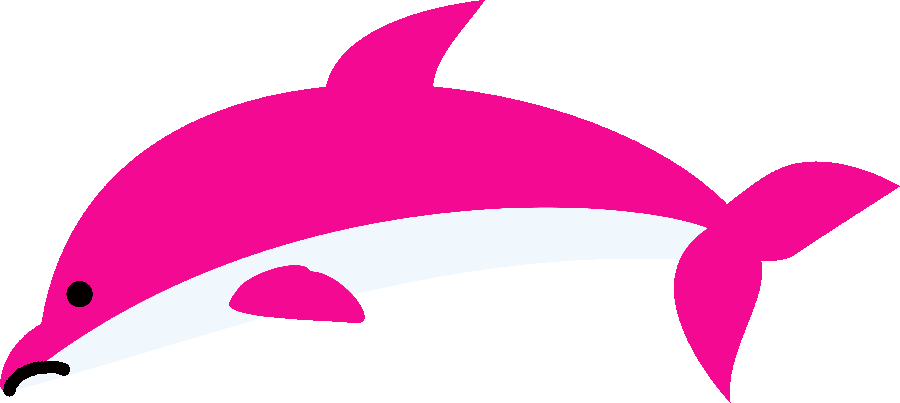
表演對動物造成的影響 海豚說：動物園海洋館的水池平均水深為6米、寬5米、長20米；而在野外，我們每天平均能出游40至150公里，1小時平均能游5到50千米，下潛深度在10至300米。所以說，海豚的自然行為在動物園裡被嚴重抑制!!!（圖示） 不僅如此，我們還被用於表演娛樂，你們一定都看過海豚解數學題、頂球，或直立身體倒著游動，我們舉起尾鳍，向你們擺動「打招呼」，訓養員指揮我們發出聲音「唱歌」。 偷偷告訴你們，這些都不是我們的自然行為，都是你們人類訓練、我們因而「被」學會的把戲。

動物：你們亂丟的垃圾都飄進來了，長期沒有打掃太亂了，我們會生病、變得沒精神